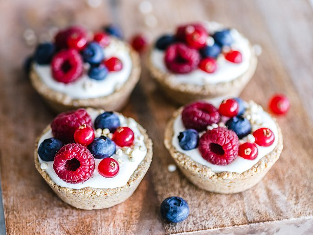

Mixed Berry Corn Muffins with Cream Cheese

Image by Ella Olsson from Stockhol, Sweden.
Description
This recipe originates from the Half Baked Harvest blog. I've made this recipe countless times and it never disappoints. The muffins are delicious and are guaranteed to be a hit! I dare say the muffins are so good, you'll want to take the recipe with you to Valhalla. The original recipe from the HBH blog doesn't include the sweetened cream cheese, but it's totally worth adding it. Trust me.
Ingredients
- 2 cups of frozen mixed berries
- 2 tbsp honey
- 1 cup all-purpose flour
- 1/2 cup cornmeal (Bob's Red Mill medium-ground cornmeal for best results)
- 1 1/2 tsp baking powder
- 1/4 tsp salt
- 2 eggs
- 1/2 cup light-brown sugar
- 1/3 cup unsweetened coconut flakes
- 8 tbsp unsalted butter, softened
- 1/2 cup canned coconut milk
- 1 tbsp pure vanilla extract
- 2 oz cream cheese
Steps
- Preheat the oven to 400 degrees Fahrenheit.
- Line a baking sheet with parchment paper. Place berries on baking sheet and drizzle with 1 tbsp of honey. Bake for ~10 minutes.
- While the berries are baking, prepare a muffin tin by lining with cups.
- Once the berries are done baking, reduce oven temperature to 350 degrees Fahrenheit.
- To make the batter, mix together in a large bowl the flour, cornmeal, baking powder, salt, sugar, and coconut flakes.
- Add the eggs, butter, coconut milk, and vanilla extract. Beat using a hand-mixer until everything is mixed together, (1-2 minutes).
- In a separate small bowl, using a hand-mixer, mix together the cream cheese and 1 tbsp of honey. You can add additional honey to taste.
- Place a spoonful of batter in the muffin liners followed by a spoonful of berries, a dollop of honeyed cream cheese, and top it off with the remaining batter mix.
- Place the muffin tin in the oven and bake for 20 minutes.
- Let the muffins cool for 15 minutes and enjoy warm.